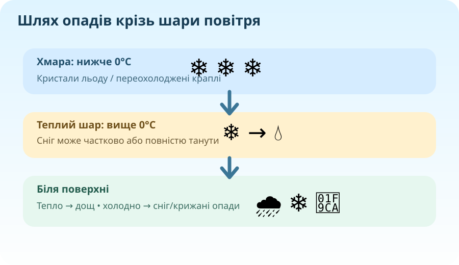

Краплі рідкої води досягають поверхні.
Що саме падає з хмари?

🔎 Перша гіпотеза
Після зливи в двох циліндричних посудинах різного діаметра рівень води однаковий — 12 мм. Який висновок правильний?
Міліметри опадів — це висота шару води, який утворився б на горизонтальній непроникній поверхні без стоку й випаровування.
Температурний профіль вирішує долю краплі

Опади утворюються, коли краплі або кристали в хмарі стають достатньо великими, щоб падати швидше, ніж їх утримують висхідні потоки.
Інтерактив: шлях частинки
Модель спрощена: у реальній атмосфері важливі товщина шарів, розміри частинок, вологість і вертикальні рухи.
Кристали льоду не встигають розтанути.
Розталий сніг знову замерзає в холодному шарі.
Росте всередині потужної грозової хмари завдяки сильним висхідним потокам.
Як читають опадомір
Опадомір
604530150
📐 Доказова задача
За добу випало 25 мм дощу. Скільки літрів води припало на ділянку площею 1 м²?
1 мм шару води на 1 м² = 1 літр. Тому 25 мм = 25 л/м².
🧠 Де встановити опадомір?
Оберіть найкраще місце: під деревом, біля стіни будинку чи на відкритій горизонтальній ділянці подалі від перешкод? Поясніть, як вітер, дах або крона можуть спотворити вимір.
Від таблиці — до аргументованого висновку
Умовні дані за 7 днів. Стовпчики — опади, лінія — хмарність.
—мм за тиждень
—днів з опадами
—висновок про зв’язок
Питання до діаграми
Чи достатньо високої хмарності, щоб гарантувати опади? Наведіть два дні з діаграми як докази.
Опади видно не лише з землі

🛰️ Якщо зображення NASA не завантажилося, відкрийте IMERG за посиланням праворуч.
🛰️ Масштаб доказу
Чому супутникова оцінка опадів особливо важлива над океанами, горами та малозаселеними територіями?
NASA GPM — IMERGNASA WorldviewЗавдання: у Worldview знайдіть шар IMERG Rain & Snow Rate і порівняйте два регіони.
Коротко про головне
Опади
Вода в рідкому або твердому стані, що випадає з атмосфери на земну поверхню.
Види
Дощ, мряка, сніг, мокрий сніг, крижана крупа, град та інші форми.
Вимірювання
Кількість опадів вимірюють у міліметрах шару води. Основний наземний прилад — опадомір.
Не плутати
Хмарність описує частку неба, вкриту хмарами; вона не дорівнює кількості опадів і не гарантує їх.
Чому 10 мм опадів — це фізично змістовна величина?
§31 + власні дані
1. Опрацюйте §31. 2. За 5–7 днів запишіть хмарність та кількість/вид опадів за доступними погодними даними. 3. Побудуйте просту стовпчикову діаграму й сформулюйте один доказовий висновок.
Електронний підручник — ВШО